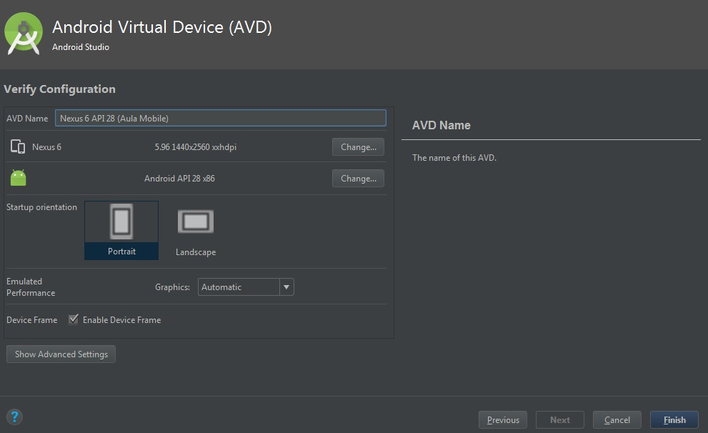

Prof. Dr. Raulcézar Alves
raulcezar@gmail.com
O que é um dispositivo móvel?
 É um dispositivo de computação portátil, pequeno, geralmente equipado com um método de entrada e uma tela de exibição.
É um dispositivo de computação portátil, pequeno, geralmente equipado com um método de entrada e uma tela de exibição.
O que é um aplicativo móvel?
- É um sistema desenvolvido para ser instalado em um dispositivo eletrônico móvel.
- Aplicativos são normalmente conhecidos como "app", abreviatura para "application", aplicação em inglês.
Qual a diferença entre um aplicativo e um site responsivo?

-
Site Responsivo
- Tenta ajustar site para as dimensões do dispositivo (nem sempre consegue).
- Requer conexão com a internet para acessar.
- Funcionalidades limitadas.
- Fácil criação, basta conhecimento em HTML, CSS e JS.
Qual a diferença entre um aplicativo e um site responsivo?
-
Aplicativo Nativo
- Acessível off-line após instalação.
- Uso de recursos, como: câmera, GPS, giroscópio, etc; possibilitando a criação de sistemas mais complexos.
- Iteração mais rápida e visualmente mais adaptável ao dispositivo.
- Desenvolvimento complexo pois depende do SO do dispositivo.
E aplicativos híbridos?

- Desenvolvidos em HTML, mas, ao contrário de sites responsivos, são executados em um contêiner nativo.
- Podem acessar recursos do dispositivo, tais como câmera, giroscópio, acelerômetro, etc; mas muitas vezes não se tem o mesmo desempenho.
- Compilam aplicações em HTML, CSS, JS em forma de Apps para diversas plataformas.
- ionic é o mais utilizado hoje.
Todos os dados necessários para meu App ficam no dispositivo?
- Ou seja, meu App funciona totalmente sem internet?
- Depende da sua aplicação.
Todos os dados necessários para meu App ficam no dispositivo?
As vezes são necessários sistemas de backend.
Cada dia mais móvel...
Hoje, carregamos um poder computacional em nosso bolso maior do que tínhamos no mundo inteiro na década de 60.

Plataformas nativas mais utilizadas
Android e iOS.
Dispositivos móveis hoje...
- Smartphones
- TVs
- Wearables
- Robôs
Desenvolvimento de Apps Android
- SO para dispositivos móveis criado pela Android Inc. em 2003.
- Comprada pela Google em 2005.
- Primeira versão para smartphones lançada em 2008.
- Hoje é a plataforma para dispositivos móveis mais utilizada no mundo.
Configurando ambiente de desenvolvimento

-
Instalação Java
- cmd >> java -version
- caso não possua, faça a instalação do Java JDK em
http://www.oracle.com/technetwork/pt/java/javase/downloads/index.html - Procure o instalador correto para seu SO.
Configurando ambiente de desenvolvimento
Configurando ambiente de desenvolvimento

-
Instalação Android Studio e Emulador de dispositivos
- Download Android Studio em
developer.android.com/studio/
Execute e faça a instalação padrão. - Download .zip HAXM (acelerador de emulação) em
https://software.intel.com/en-us/articles/intel-hardware-accelerated-execution-manager-intel-haxm
Descompacte e execute o intelhaxm-android.
Pode ser necessário habilitar VTx na BIOS.
Criando App de Teste
Iniciando Android StudioCriando App de Teste
Instalação PadrãoCriando App de Teste
Tema "Darcula" mais usado entre programadoresCriando App de Teste
Finalizando...mais bibliotecas serão baixadasCriando App de Teste
Iniciando um novo projetoCriando App de Teste
Nomeando projetoCriando App de Teste
Escolhendo Dispositivos e versão AndroidCriando App de Teste
Escolhendo Templates
Criando App de Teste
Criando Activity (veremos posteriormente)Criando App de Teste
Instalando requisitos do projetoCriando App de Teste
Primeira inicialização pode demorarCriando App de Teste
Projeto criado, em caso de erro mais bibliotecas podem ser requisitadas (basta clicar para resolver)Criando App de Teste
Baixando SDK e versão Android do projetoCriando App de Teste
Após compilar, ao clicar na aba activity_main.xml é possível ver o AppCriando App de Teste
Configurar emulador...clique em AVD ManagerCriando App de Teste
Configurar emulador...crie um novo dispositivo virtualCriando App de Teste
Configurar emulador...Nexus 5 está ok, vamos criar Nexus 6Criando App de Teste
Configurar emulador...baixar API para o dispositivoCriando App de Teste
Configurar emulador...baixar API para o dispositivoCriando App de Teste
Configurar emulador...baixar API para o dispositivoCriando App de Teste
Configurar emulador...agora a API já está disponívelCriando App de Teste
Configurar emulador...dê um nome para o emulador
Criando App de Teste
Configurar emulador...clique em Run para executar o App no emuladorCriando App de Teste
Configurar emulador...clique em Run para executar o App no emuladorCriando App de Teste
- É possível executar o App direto no seu celular, ligando ele na USB
- Mas é necessário colocar o celular em modo DEBUG e liberar o acesso
Próxima Aula
- Entender a estrutura de um projeto Android
- Criar um novo projeto de exemplo com mais funcionalidades